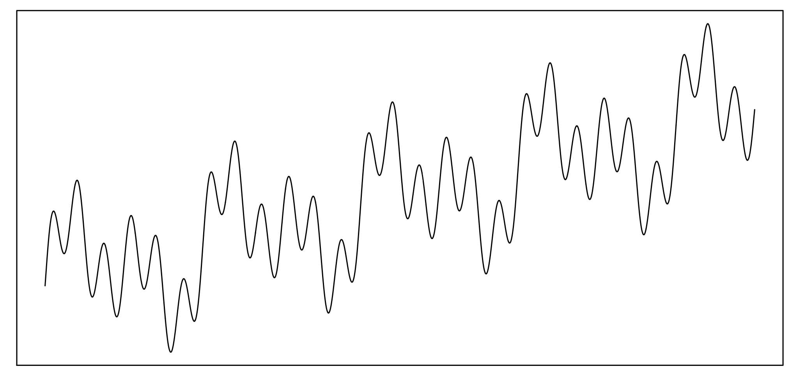
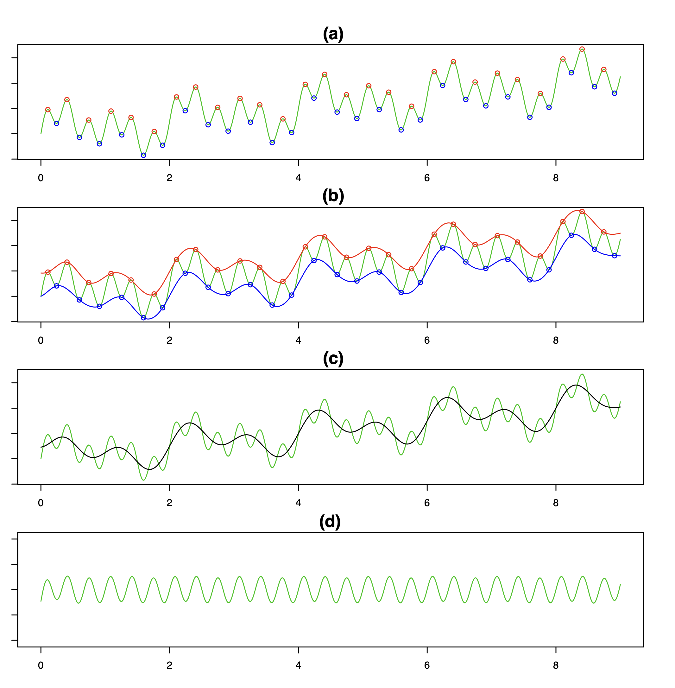
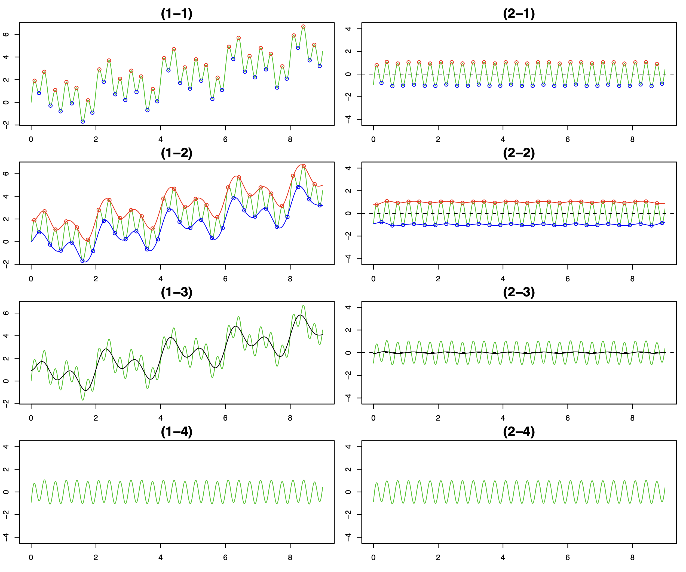
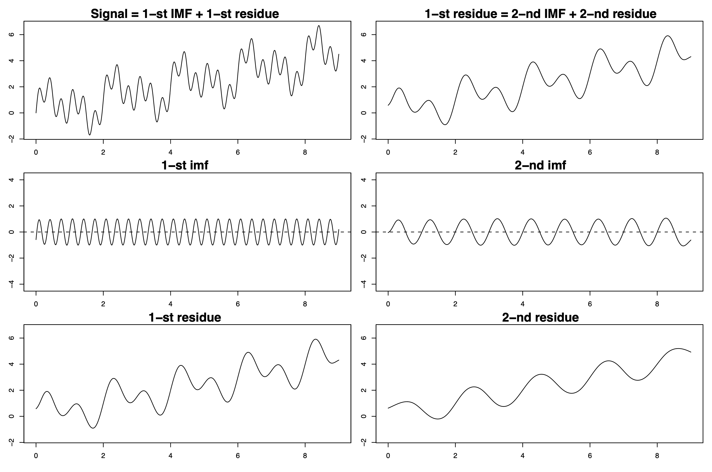
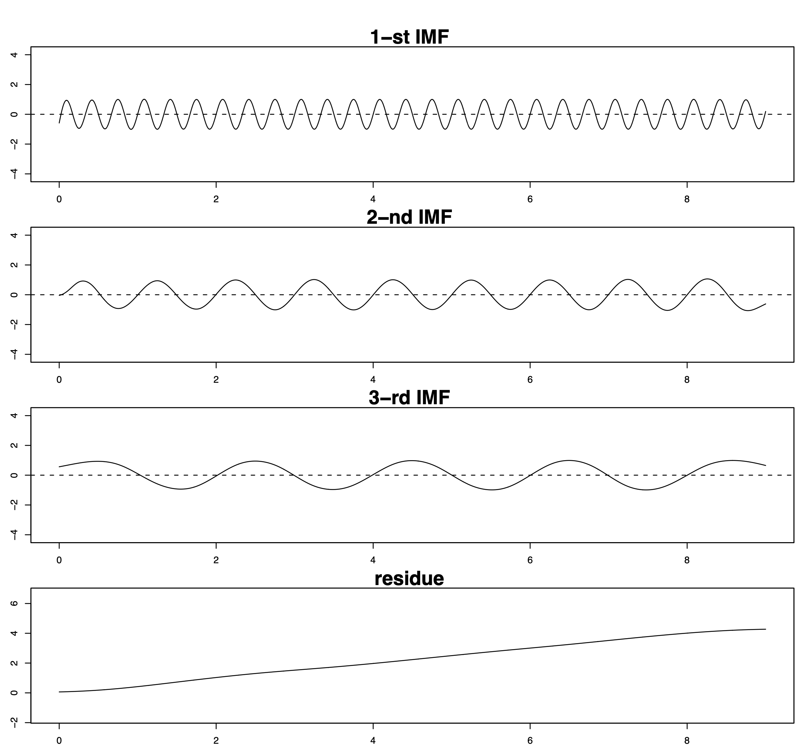
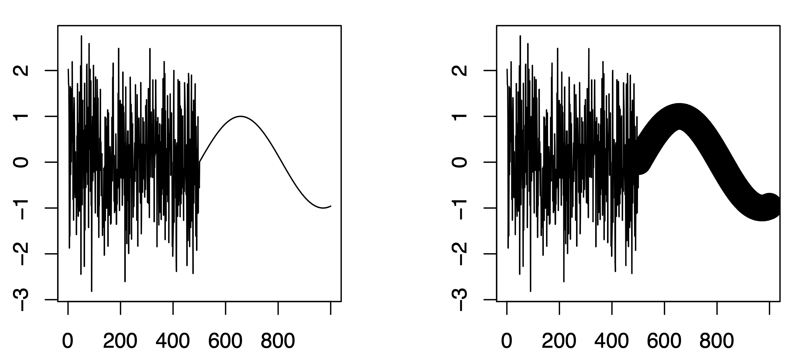
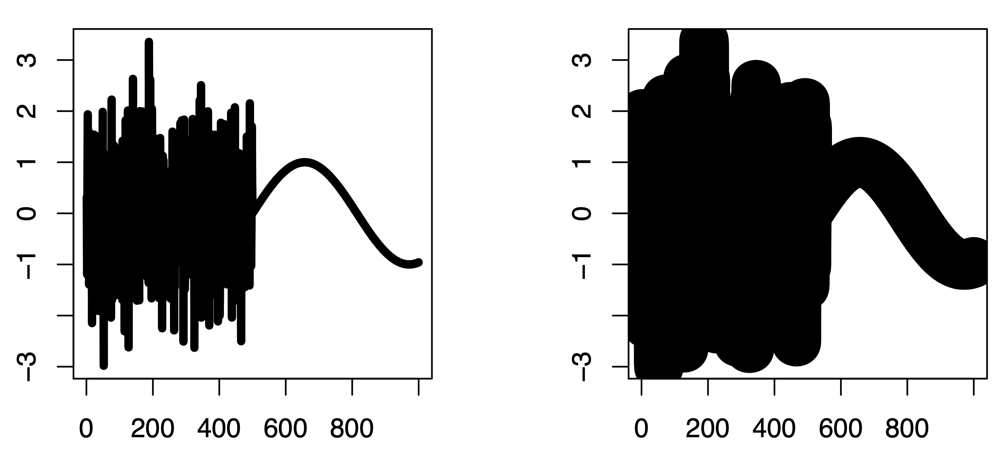

[Essays] 다중척도방법
Introduction
\({\boldsymbol y}={\boldsymbol X}^\top\)
- 이 논문에서는 몇 가지 멀티스케일 방법을 리뷰하고자 한다.
- 멀티스케일 방법이란 ~ + 왜 멀티스케일 방법을 써야하는가.
- 우리는 그중에서 시각화와 분해에 관심이 있다. + 다른 접근법들도 소개
- 시각화가 사용되는 사례, 어떻게 이용할 수 있는가?
- 분해가 이용되는 사례, 어떻게 이용할 수 있는가?
- 많은 멀티스케일 방법 중 우리는 TPT, EPT, EBT 를 중점적으로 소개하는데 초점을 맞출 것이다.
- 각각의 transform은 어떠한 공통점이 있는가?
- 왜 이렇게 많은 트랜스폼이 있어야하는가?
- 미래에는 어떠한 트랜스폼을 만드는 것이 좋을까?
생각의 정리
- 멀티스케일 컨셉
- EMD는 멀티스케일의 컨셉을 가지고 있음. 스케일별로 신호를 걸러낸다. 멀티스케일 파라메터를 선택하지 않음.
- VMD는 확실히 멀티스케일 컨셉을 가지고 있으며 여러스케일을 동시에 관찰. 멀티스케일 파라메터는 신호의 power가 주파수도메인에서 밀집된 곳으로 선택한다. 멀티스케일 파라메터는 퓨리에analysis에서의 frequency에 대응함
- TPT와 EBT는 데이터를 다양한 스케일로 관찰하는데 목표가 있음. 멀티스케일 파라메터가 명시적으로 존재한다. 여러 멀티스케일 파라메터를 모두 고려하며, 특정한 기준에 따라 파라메터를 선택하기도 하고 그렇지 않을수도 있다. 스케일별로 신호를 변환시켜해석한다.
- EMD
- 멀티스케일 파라메터: 존재하지 않음 -> data에 따라서 emprical 하게 선택된다.
-
-
IMF based method
Transform based method
- Theory:
- EMD: shift 알고리즘
- VMD
- EBT
- TPT
- decomposition: EMD, VMD, EBT
- EMD, EBT shift 알고리즘 사용
- VMD FFT 기반의 spectral analysis를 사용
- VMD: locally basis
- EMD, VMD: sinusoid
- 2D로의 확장: 모두 용이하다.
- vis(EDA): TPT, EBT
- Applications:
- TPT: Test
- EBT: Tets
- EMD: Decomposition, prediction
- VMD: Feature Exatraction
Intro
- In this talk, we present three multiscale methods, thick-pen transform, elastic-band transform, and heavy-snow transform for data analysis and visualization.
- All transforms adopt a multiscale concept.
- All transforms are developed for capturing a global structure of data and finding some local features of them simultaneously.
- A decomposition method produces several important modes in a simple form; thus, the information embedded in signals can be easily recovered, and the interpretability of its components is enhanced.
- Several approaches for decomposition have been studied in two-fold.
- Basis expansion approach: Fourier-based spectral analysis and wavelet analysis.
- Data-adaptive procedure with empirical filters: EMD.
This talk focuses on the data-adaptive procedure.
EMD
- EMD provides a data-driven approach to decompose a signal into so-called intrinsic mode functions (IMFs) according to the local oscillation magnitude in the physical domain.
- IMFs can be considered as empirical basis functions.
- Time-varying frequency can be defined by Hilbert transform (HT). For a real signal \(x(t)\), the analytic signal \(z(t)\) is defined as \(z(t)=x(t)+iy(t)\), where \(y(t)\) is the Hilbert transform of \(x(t)\),
\[ y(t)=\frac{1}{\pi}P\int_{-\infty}^{\infty}\frac{x(s)}{t-s}ds, \]
where \(P\) is the Cauchy principle value.
- The analytic signal \(z(t)\) can be represented by a polar coordinate form,
\[ z(t)=a(t)\exp(i\psi(t)), \]
where the amplitude \(a(t)=\|z(t)\|=\sqrt{x(t)^2+y(t)^2}\) and the phase \(\psi(t)=\arctan(y(t)/x(t))\).
- Instantaneous frequency is defined as the derivative of time-varying phase, \[
\frac{d\psi(t)}{dt}.
\]
Motivation of EMD
- A necessary condition to define a meaningful instantaneous frequency is that signals are symmetric with respect to the local zero mean.
- EMD is developed to decompose signals so that HT works well.
- Suppose we have a signal \(x(t) = 0.5 t + \sin(\pi t) + \sin(2 \pi t) + \sin(6 \pi t)\).

Sifting process for extracting IMF’s
- Identify local extrema.
- Obtain two functions interpolated by local maxima and minima.
- Take an average of envelopes.
- An oscillated signal is extracted by subtracting the envelope mean from the original signal \(x(t)\).

- One iteration of the above procedure does not guarantee that the signal is an IMF. The same procedure is applied to the signal until the properties of IMF are satisfied
- This iterative algorithm is called sifting process.
- Sifting makes the remaining signal more symmetric with respect to the local zero mean.
- Finally, we have \(L\) empirical modes and a residue, \[
x(t) = \sum_{\ell=1}^{L} \text{imf}_\ell(t) + r(t).
\]



Generalization of EMD
- Interpretation of EMD by cubic splines (Park, Kim and Oh, 2011)
- Bidimensional EMD (Kim, Park and Oh, 2012)
- Smoothed EMD (Kim and Oh, 2012)
- Quantile EMD (Park, Kim and Oh, 2015)
The R package EMD of Kim and Oh (2009) implements EMD and Hilbert transform. Main functions
- extractimf() implements sifting process to extract IMF’s.
- extractimf(, sm=“spline”,) implements smoothed EMD.
- hilbertspec() implements Hilbert transform.
- extractimf2d() implements 2-D EMD.
Thick-pen transform
Traditional visualization of a process \(X_t\): plotting the values of \((t,X_t)\) and “connecting the dots”.

- Moving away from the left-hand plot, the sine wave disappears. This does not happen with the right-hand plot, where the slow sinusoid is Figure 1: White noise followed by slow wave, plotted with pen of thickness 1 (left plot) and plotted using a thicker pen.
- The degree of visibility of data from a distance can be an indicator of the local structural properties of the data as it can discriminate between fast- and slowly-oscillating signals.
- There is a link between volume of the pen used and its visibility.
- Motivated by the above discussion, we propose thick-pen transform (TPT) to visualize a time series using pens of various thicknesses.
- TPT is multiscale, with thicker pens bringing out coarse-scale features of the data and vice versa.
- The same time series plotted with pens of two thicknesses 5 and 30.

- Let \(\{X_t\}_{t=1}^{n}\) be a real-valued univariate process, and \({\cal T}\) denote a set of thickness parameters.
- For each \(\tau_i\in\mathcal{T}\), let \(U_{t}^{\tau_i}\) denote the upper boundary of the area covered by a pen of thickness \(\tau_i\), connecting the points \(\{(t,X_t)\}_{t=1}^n\). Similarly, let \(L_{t}^{\tau_i}\) denote its lower boundary.
- TPT is defined as the sequence of all pairs of boundaries, \[
TP_{\mathcal{T}}(X_t)=\{(L_{t}^{\tau_i},U_{t}^{\tau_i})_{t=1}^n\}_{i=1,\ldots,|\mathcal{T}|}.
\]
- Square pen \[\begin{eqnarray*}
U_{t}^\tau &=& \max\{X_t,\ldots,X_{t+\tau}\}+\frac{\tau}{2},\\
L_{t}^\tau &=& \min\{X_t,\ldots,X_{t+\tau}\}-\frac{\tau}{2}.
\end{eqnarray*}\]
- Round pen \[\begin{eqnarray*}
U_{t}^\tau &=& \max_k\{X_{t+k}+\sqrt{\tau^2/4-k^2}\},\\
L_{t}^\tau &=& \min_k\{X_{t+k}-\sqrt{\tau^2/4-k^2}\}.
\end{eqnarray*}\]
- There is a connection between the above formulae and kernel smoothing.